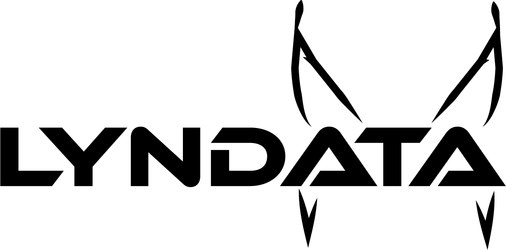

A LYNDATA aplica o "olho clínico" sobre a sua infraestrutura existente de Business Intelligence, eliminando vícios de análise e transformando relatórios estáticos em decisões de negócio concretas.
Ruído operacional filtrado. Identificada oportunidade de retenção ignorada pela equipa interna.
A visão aguçada e a adaptação do lince inspiram a nossa capacidade de encontrar padrões invisíveis no meio do ruído de dados corporativos.
A LYNDATA é uma plataforma e consultoria especializada de Business Intelligence. Não substituímos a sua equipa de dados — entramos onde a rotina diária e a habituação visual deixam pontos cegos.
Detetamos anomalias e oportunidades estratégicas antes que afetem a operação.
Sem guerras entre departamentos. Entregamos a leitura fria e matemática dos factos.
Trabalhamos com organizações que possuem equipas e infraestruturas de BI montadas, mas enfrentam limitações de interpretação e alinhamento executivo.
Após meses a olhar para os mesmos dashboards, as equipas perdem a capacidade de questionar números invulgares e tendências veladas.
O Marketing, as Vendas e as Finanças leem os mesmos relatórios de forma conveniente para defender os seus orçamentos.
Antes de alocar recursos elevados numa nova estratégia, a administração precisa de confirmar hipóteses com uma segunda opinião.
Princípios rigorosos aplicados a cada projeto de auditoria e extração de dados.
Captar os sinais subtis que a concorrência ignora.
Integração com qualquer infraestrutura técnica já existente.
Análise matemática rigorosa e livre de ambiguidades.
Clareza cristalina sobre o cenário futuro da empresa.
Conversão direta de números em plano de ação imediato.
Selecione uma área de negócio abaixo para comparar a interpretação interna convencional com o diagnóstico especializado.
A equipa interna celebra o aumento global de faturação e propõe expandir o orçamento comercial no próximo trimestre.
Recomendação: Congelar expansão comercial. Redirecionar recursos para a equipa de sucesso do cliente para estancar a perda velada de base.
Preencha o formulário para agendarmos uma reunião confidencial de diagnóstico. Avaliamos a sua estrutura com sigilo absoluto.